上課、開會時錄音，自動變成逐字稿和 AI 筆記，還能直接問「老師說哪些會考？」。登入之後不用申請任何 API key 就能用，換手機或電腦登入同一個帳號，逐字稿和筆記都在。
圖片上的紅色數字，對應圖片下面的說明。
1. 第一次使用：登入
點左下角「🔑 登入」，第一次用按「還沒有帳號？建立一個」，填名字、Email 和密碼就好。和「美食收藏」是同一組帳號。
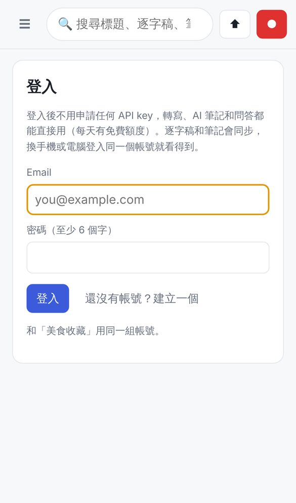
登入頁（手機）
- 不用 API key：登入後轉寫、AI 筆記和問答都直接能用。每個人每天有免費額度，用完隔天（台灣時間半夜）就恢復。點左下角自己的名字可以看今天用了多少。
- 跨裝置同步：分類、逐字稿、AI 筆記、問答、重點都會同步。錄音檔本身預設不上傳，要換裝置聽，在錄音頁按「⤓ 匯出」選「☁️ 上傳音檔」，或到設定勾「錄完自動上傳」。照片不同步。
- 登入前錄的東西，登入後會自動放進你的帳號。
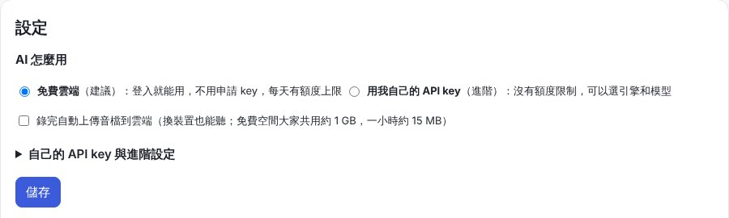
設定 → AI 怎麼用
預設是「免費雲端」。額度不夠用、或想自己選引擎和模型，可以改成「用我自己的 API key」，下面是填法。
進階：用自己的 API key
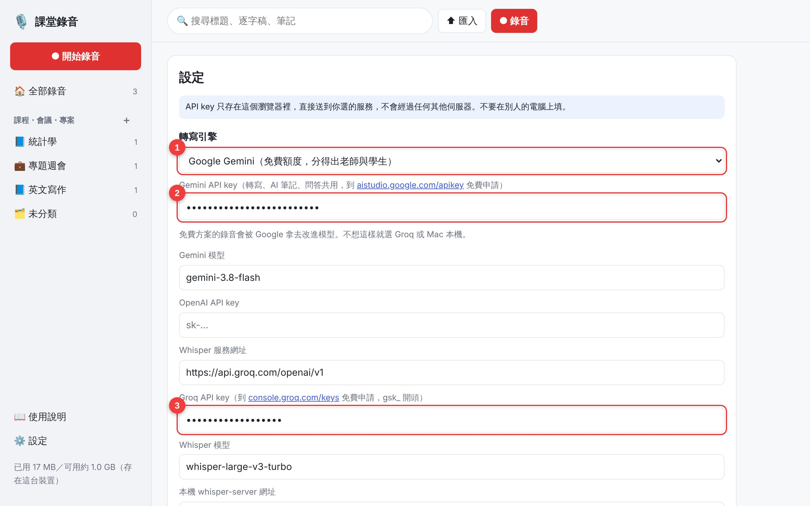
設定頁（上半部）
- 1
轉寫引擎：選誰把聲音變成文字。建議用 Google Gemini，分得出老師和學生。只要文字、不在乎誰講的，可以選 Groq（免費）。
- 2
- 3
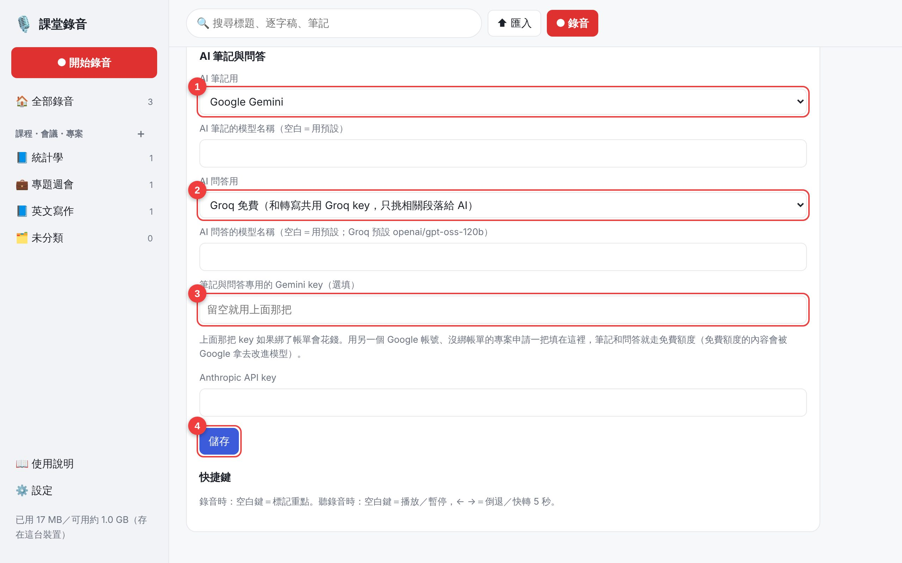
設定頁（往下捲）
- 1
AI 筆記用：轉寫完自動整理筆記的 AI，預設 Gemini。
- 2
AI 問答用：預設 Groq，免費。
- 3
筆記與問答專用的 Gemini key（選填）：如果上面那把 Gemini key 綁了帳單，可以用另一個 Google 帳號申請一把沒綁帳單的 key 填在這裡，筆記和問答就不花錢。
- 4
改完記得按 儲存。
⚠️ 不要在別人的電腦上填 key。免費方案的內容可能被服務商拿去改進模型，很私密的會議建議改用 Mac 本機轉寫。
2. 首頁與分類
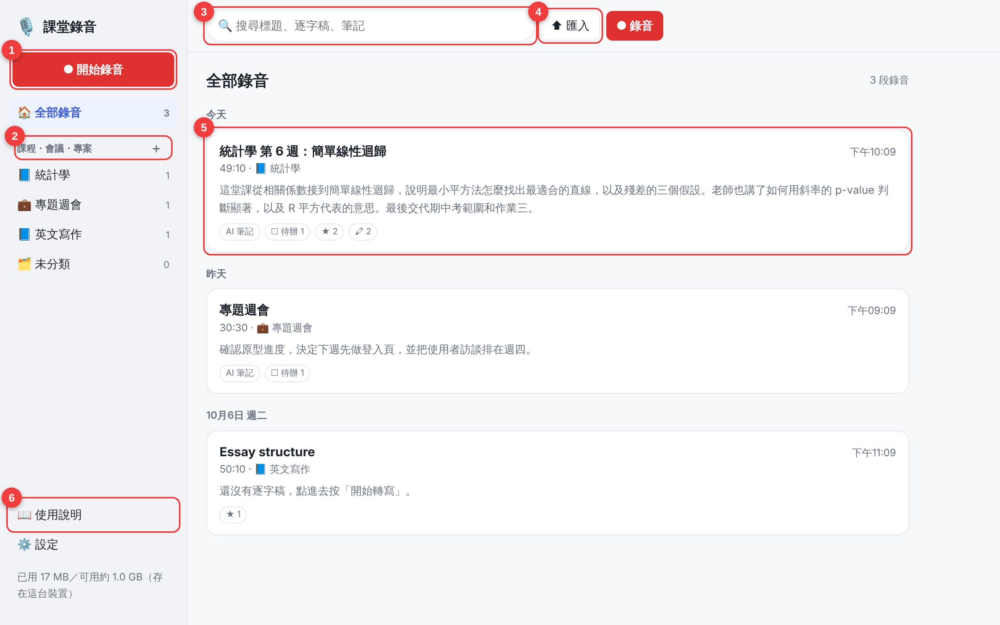
首頁：依日期排好的錄音卡片
- 1
開始錄音：任何畫面都可以按，右上角紅色的「● 錄音」也一樣。
- 2
分類：按「＋」新增課程、會議或專案，例如「統計學」。點分類名稱只看那一類的錄音。
- 3
搜尋：會找標題、逐字稿和 AI 筆記裡的字，例如輸入「期中考」。
- 4
匯入：把手機「語音備忘錄」或其他錄好的音檔（m4a、mp3、wav）放進來轉寫。
- 5
錄音卡片：顯示時間、長度、分類和 AI 概述。底下的小標籤是還沒做完的待辦（☐）、標記（★）、畫的重點（🖍）數量。點一下打開。
- 6
使用說明：就是這一頁。
3. 課程設定：專有名詞、老師聲音
點左邊的課程名稱，再點「這個課程的設定」展開。每門課設一次就好，之後每週都會用到。
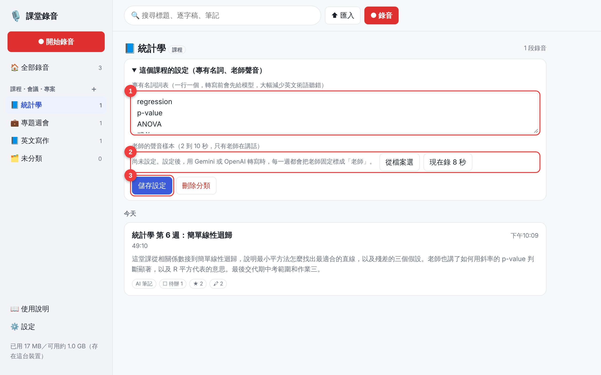
課程設定
- 1
專有名詞詞表：一行一個，例如 regression、ANOVA、老師的名字。AI 轉寫前會先看這張表，英文術語就比較不會聽錯。
- 2
老師的聲音樣本：錄 8 秒只有老師講話的聲音（或從檔案選）。設好之後，用 Gemini 轉寫時每週都會把老師固定標成「老師」。
- 3
儲存設定：改詞表後要按。
4. 錄音
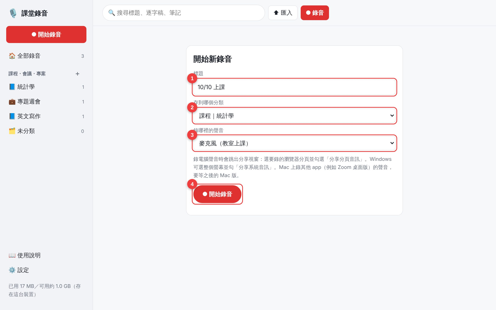
開始新錄音
- 1
標題：預設是今天日期，之後也可以改。
- 2
分類：存到哪門課。
- 3
錄哪裡的聲音：教室上課選「麥克風」。看線上課、YouTube 選「電腦播放的聲音」，跳出分享視窗時要選分頁並勾「分享分頁音訊」。線上會議選「麥克風＋電腦聲音」。（電腦聲音只有電腦版 Chrome、Edge 可以錄。）
- 4
開始錄音。第一次會問麥克風權限，按允許。
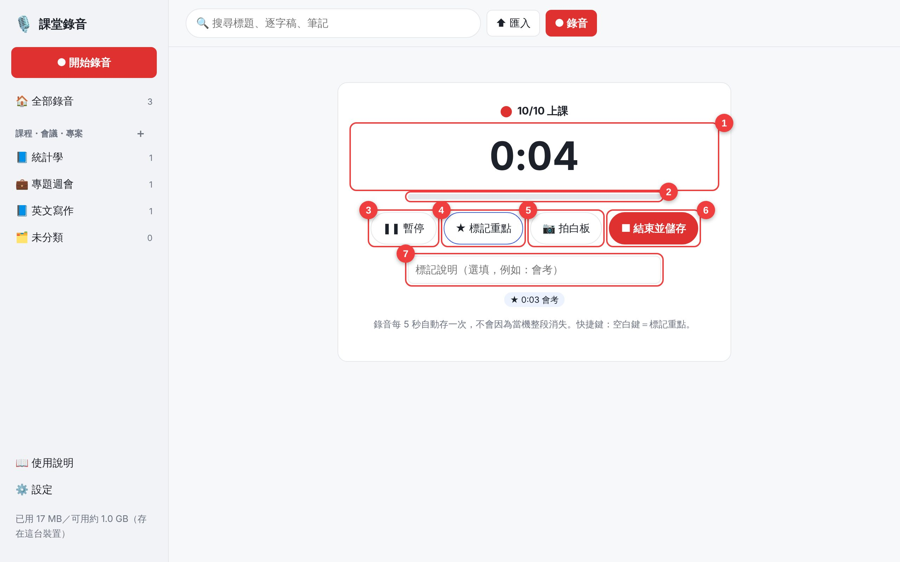
錄音中
- 1
已錄時間，旁邊紅點閃爍代表正在錄。
- 2
音量條：有在動就代表有收到聲音。完全不動請檢查麥克風。
- 3
暫停／繼續：下課休息可以先暫停。
- 4
★ 標記重點：老師說「這個會考」時按一下，時間點會留下來，AI 整理筆記時也會特別注意。電腦上按 空白鍵 也可以。
- 5
📷 拍白板：拍下的照片會對到錄音時間，之後點照片就跳到那一段。
- 6
結束並儲存：錄完按這個。
- 7
標記說明（選填）：先打幾個字（例如「會考」），再按標記重點。
💡 錄音每 5 秒自動存一次。就算瀏覽器當掉，也只會少最後幾秒。
5. 轉寫與 AI 筆記
錄完會打開這段錄音。第一次按「開始轉寫」，轉完會自動產生 AI 筆記。一小時的課大約要幾分鐘。
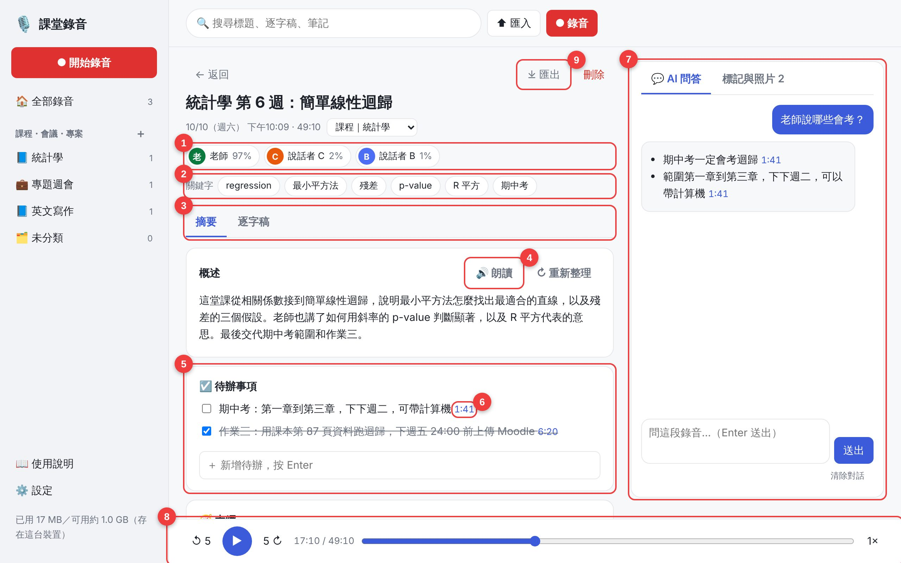
錄音頁的「摘要」分頁
- 1
說話者：每個人講話的比例。綠色是老師。點名字可以改名，例如把「說話者 B」改成「小明」。
- 2
關鍵字：AI 挑出來的重要詞，點一下會在逐字稿標出來（見第 7 節）。
- 3
分頁：「摘要」看 AI 筆記，「逐字稿」看完整文字。
- 4
朗讀：讓電腦把重點唸給你聽。旁邊的「重新整理」會重新產生 AI 筆記。
- 5
待辦事項：AI 抓出來的作業、考試、期限。做完打勾，也可以在下面的框框自己新增。
- 6
藍色時間：點一下就從那個時間開始播放。往下捲還有大綱、名詞解釋、可能沒聽懂的地方、複習問題（點題目看答案）。
- 7
AI 問答：見第 8 節。
- 8
播放列：↺5 倒退 5 秒、▶ 播放、5↻ 快轉 5 秒，拖拉進度條跳到任何地方，最右邊點一下切換速度（1×、1.25×、1.5×、2×、0.75×）。
- 9
匯出：見第 9 節。
6. 逐字稿：畫重點、改名
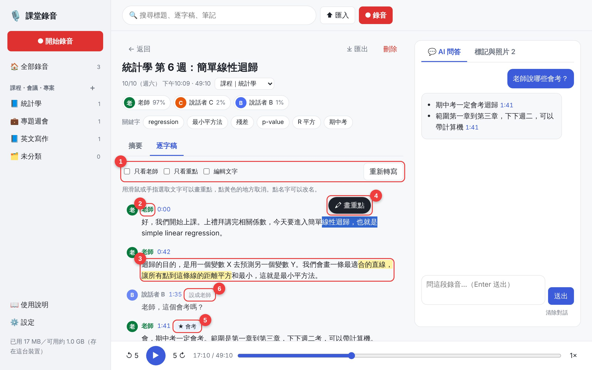
「逐字稿」分頁
- 1
篩選工具：「只看老師」把學生發問和聊天收起來；「只看重點」只留你畫過重點的段落；「編輯文字」可以直接改錯字；「重新轉寫」換了引擎或詞表後可以再轉一次。
- 2
說話者名字：點一下改名，同一個人的每一段都會一起改。
- 3
黃色＝你畫的重點。點黃色的地方可以取消。
- 4
畫重點：用滑鼠拖曳（手機用手指長按）選取一段文字，上面會跳出「🖍 畫重點」，按下去就變黃色。
- 5
★ 標記：錄音時按的標記，會出現在對應的那一段。
- 6
設成老師／不是老師：AI 認錯人時，滑鼠移到那一段就會出現這顆按鈕，點一下切換。
播放時，正在講的那一段會變成淡藍色；點每段旁邊的藍色時間就從那裡開始聽。
7. 關鍵字
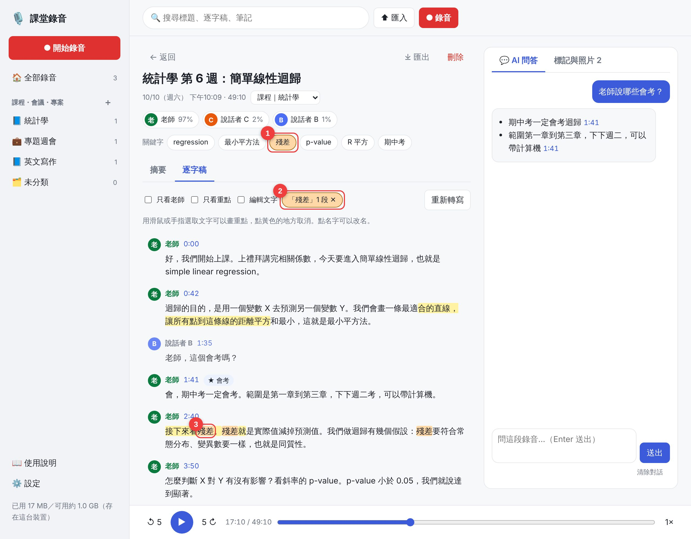
點關鍵字後
- 1
點一個關鍵字（這裡是「殘差」），會自動切到逐字稿。
- 2
這裡顯示有幾段提到它。按 ✕ 或再點一次關鍵字就取消。
- 3
逐字稿裡出現的地方都會標成橘色，畫面會自動捲到第一個。
8. AI 問答
電腦上在右邊，手機上在「💬 AI 問答」分頁。AI 只根據這段錄音回答，不會自己亂編。
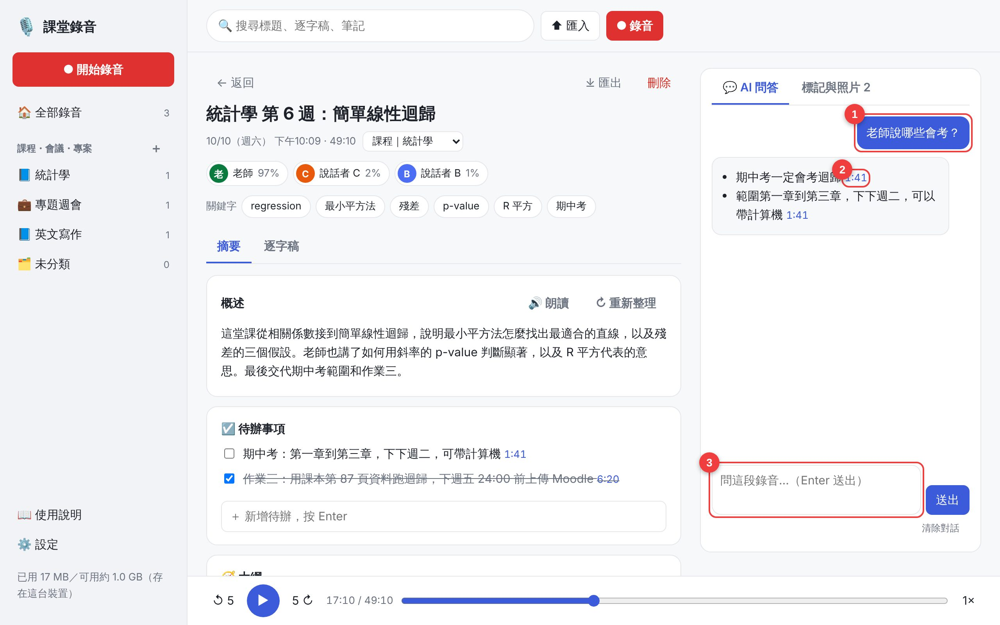
AI 問答
- 1
你的問題。還沒問過時，會有幾個建議問題可以直接點，例如「老師說哪些會考？」「幫我列出作業和期限」。
- 2
藍色時間：答案的出處，點一下就跳去聽原話。
- 3
輸入框：打字後按 Enter 送出，Shift＋Enter 換行。問答紀錄會存起來，下次打開還在。
💡 用 Groq 免費問答時，因為免費額度每分鐘能處理的字數有限，AI 只會看跟問題最相關的幾段和 AI 筆記。問題問得越具體越準，例如「R 平方是什麼意思？」比「今天講了什麼？」好。連續問太快時會自動等一下再回答。
9. 匯出到 Notion
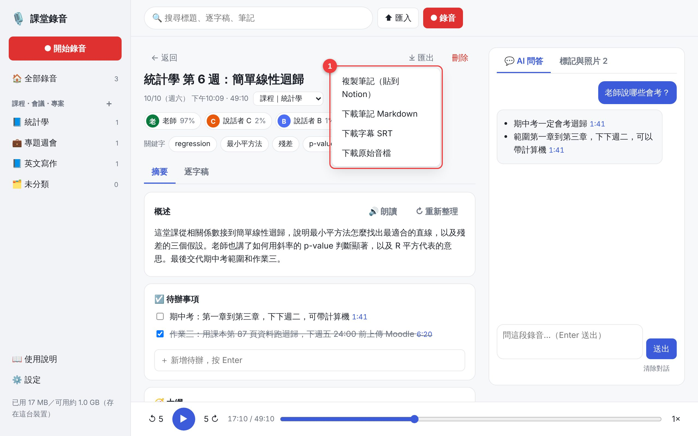
右上角「⤓ 匯出」
- 1
複製筆記後直接在 Notion 貼上，會保留標題、待辦勾選框、重點。也可以下載成 Markdown 檔、SRT 字幕檔（配影片用），或下載原始錄音檔。
10. 手機使用
用手機打開 app 網址，Safari 按「分享 → 加入主畫面」，之後就像一般 app 一樣從主畫面打開。
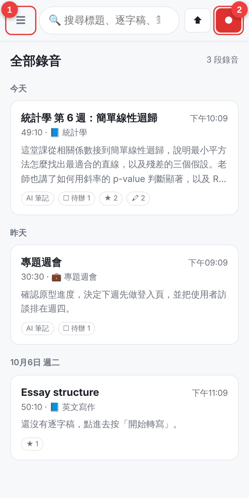
手機首頁
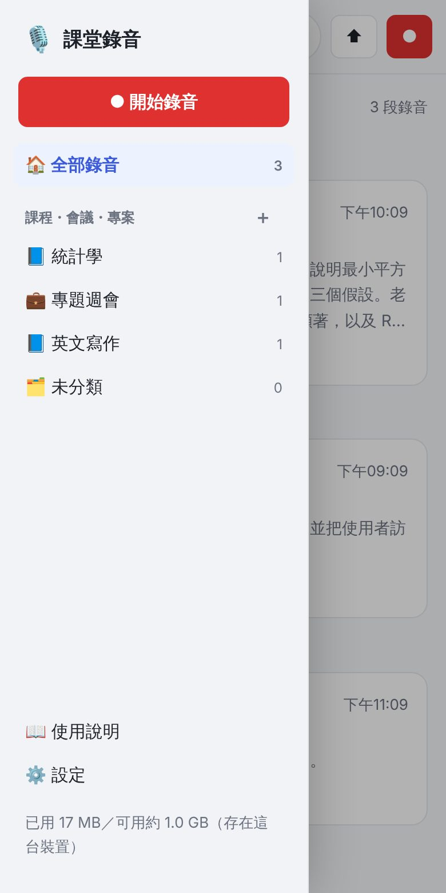
點 ☰ 打開選單
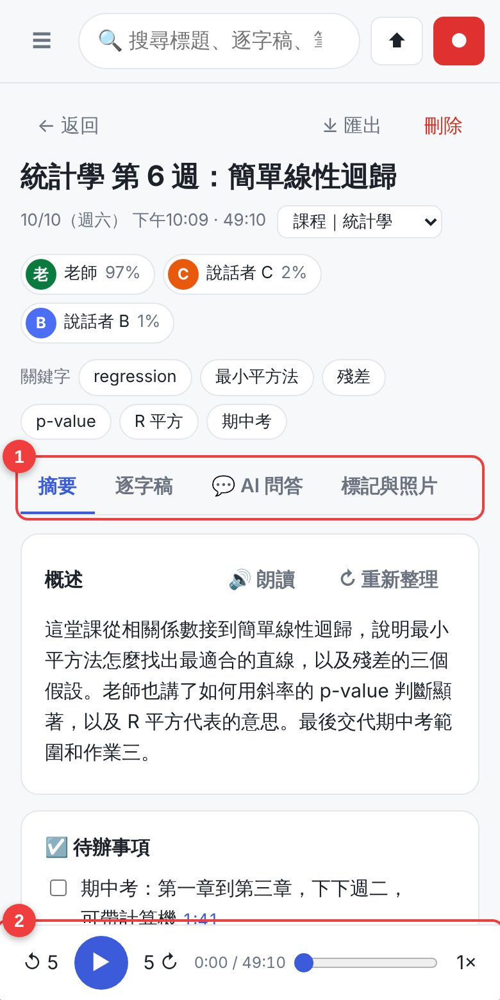
手機的錄音頁
- 1
☰ 選單：分類、設定、使用說明都在這裡。
- 2
紅色圓點：開始錄音。
手機的錄音頁把「AI 問答」和「標記與照片」也放進分頁，播放列一樣在最下面。
⚠️ 手機只能錄麥克風，錄不到手機本身播放的聲音。iPhone 錄音時請保持螢幕開著（app 會自動防止螢幕休眠）。最保險的做法是用內建「語音備忘錄」錄，下課後再按「匯入」。
11. 快捷鍵（電腦）
| 按鍵 | 錄音時 | 聽錄音時 |
|---|
| 空白鍵 | 標記重點 | 播放／暫停 |
| ← | | 倒退 5 秒 |
| → | | 快轉 5 秒 |
正在輸入框打字時，快捷鍵不會作用。
12. 常見問題
- 出現「今天的免費額度用完了」
- 每個人每天的免費雲端額度有上限，隔天就恢復。急著用的話，到設定改成「用我自己的 API key」。
- 轉寫失敗，出現 402
- 這把 Gemini key 所在的專案綁了預付帳單，但餘額是 0。到 Google AI Studio 儲值，或改用沒綁帳單的 key，也可以先把轉寫引擎換成 Groq。
- 出現 429 或「免費額度用完了」
- 免費方案每分鐘、每天有次數上限。app 會自動等一下再試；還是不行就過幾分鐘再按，或換另一個引擎。
- AI 問答說「要先到設定填入 API key」
- AI 問答預設用 Groq，到設定填 Groq API key。不想申請 Groq 的話，把「AI 問答用」改成 Gemini。
- 老師和學生分錯了
- 在逐字稿把滑鼠移到那一段，按「設成老師」或「不是老師」。想要每週都準，到課程設定錄一段老師的聲音樣本。
- 英文專有名詞一直聽錯
- 把正確拼法加進課程的專有名詞詞表，再按「重新轉寫」。
- 出現簡體字
- 設定裡勾「把簡體字轉成台灣繁體」（預設已勾）。
- 錄音存在哪裡？換手機會不見嗎？
- 有登入的話，逐字稿和筆記存在雲端，換手機登入就看得到；錄音檔要上傳過才會跟著走。沒登入的話只存在這個瀏覽器，清除瀏覽器資料就會不見。
- 錄電腦聲音沒有聲音
- 分享視窗要選「分頁」並勾選「分享分頁音訊」。Mac 上錄 Zoom 這類 app 的聲音，網頁版做不到，要等之後的 Mac 版。
💡 錄課堂自己複習一般沒問題，但最好先跟老師說一聲，錄音和逐字稿也不要公開散布。